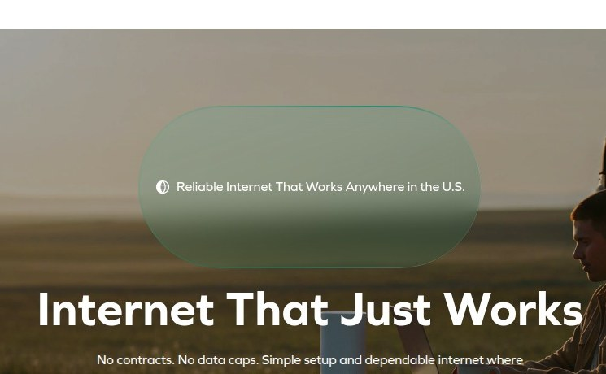

Before & After — click any card for evidence, math and the dev spec

1
Urgent
Lab LCP of 46.4 s on mobile
Measured in a lab load: the page's main content takes this long to appear on a mid-range phone; most visitors have bounced long before.
Medium effortMeasured
Full analysis →

2
High
Competing primary CTAs
Multiple primary CTAs without hierarchy confuse the visitor about which action advances the funnel.
Medium effort
Full analysis →

3
High
Headline omits unlimited promise
The hero headline fails to mention unlimited data, weakening the core value proposition.
Low effort
Full analysis →


4
High
Lab CLS of 0.73 on mobile
Measured in a lab load: the layout jumps while loading, causing mis-taps on the very buttons the funnel depends on.
Medium effortMeasured
Full analysis →

5
High
Lab TBT of 1,140 ms on mobile
Measured in a lab load: script work freezes the main thread, so taps and scrolls go dead during load.
Medium effortMeasured
Full analysis →

Trusted by thousands
Real Stories from Real Users
Rated 4.5 out of 5 stars based on 2,847 reviews from the last 30 days
Read Reviews✓ Review count & recencyAdding the number of reviews and a date range boosts credibility.
6
Medium
Review count and recency missing
Social proof lacks review count and recency, weakening credibility.
Medium effort
Full analysis →